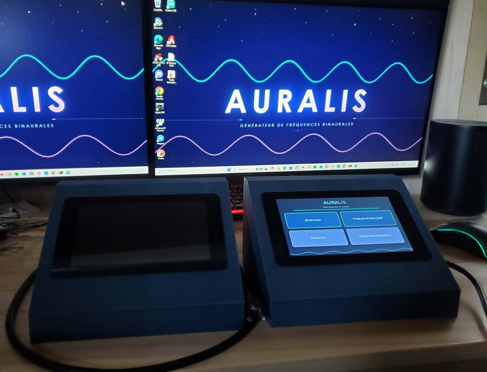
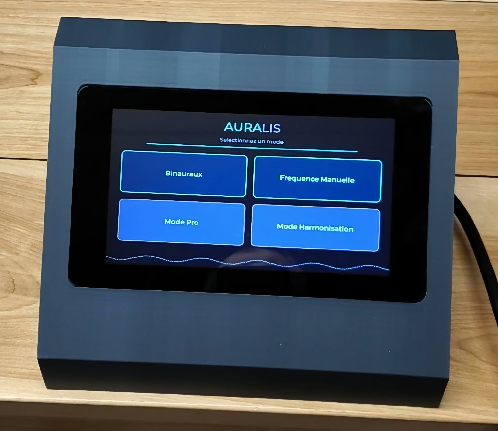
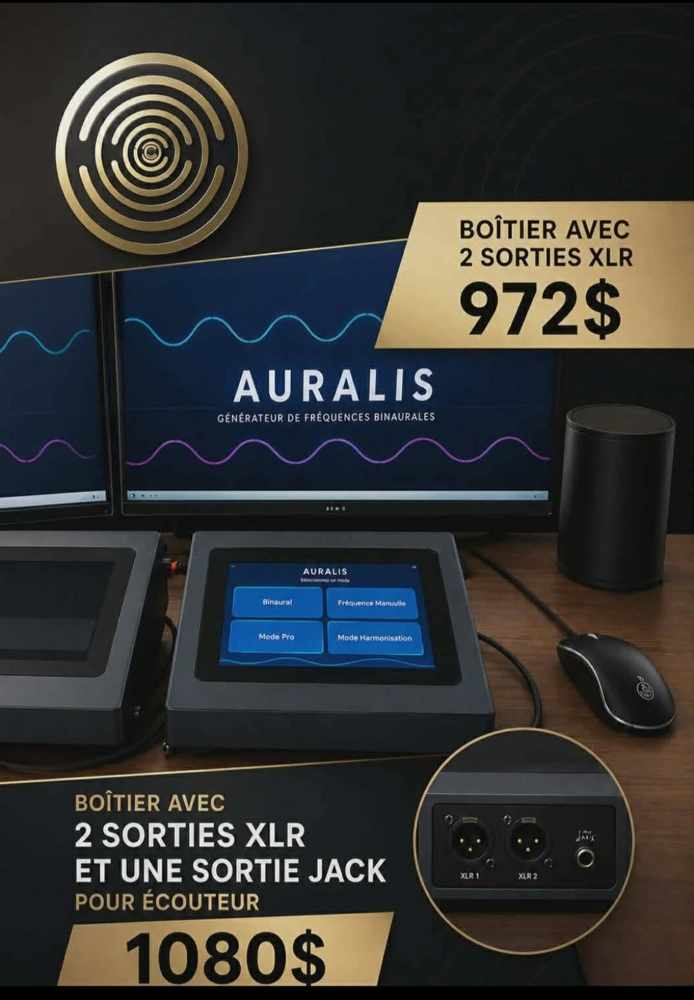
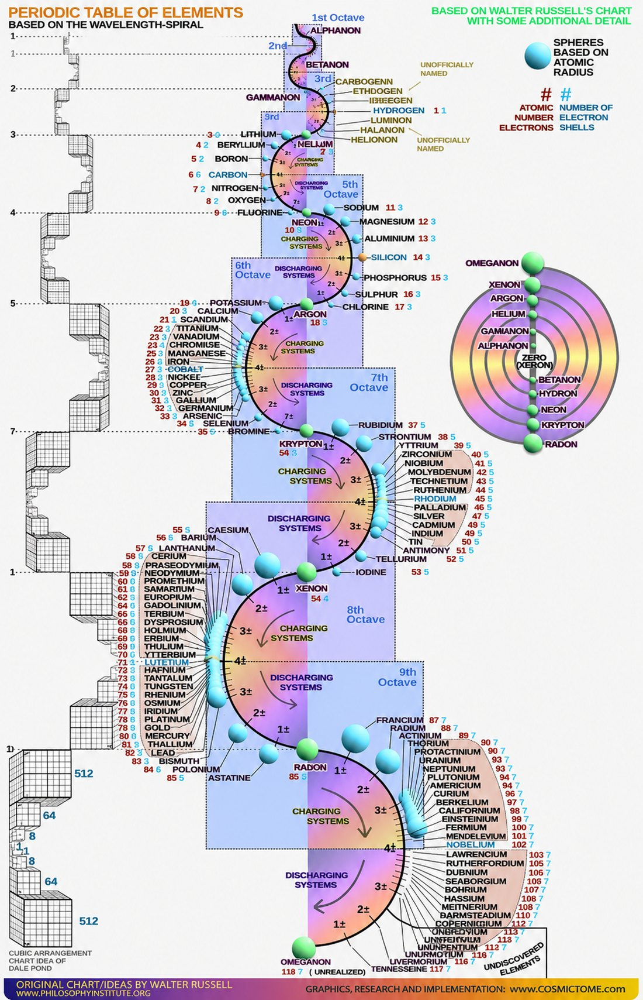
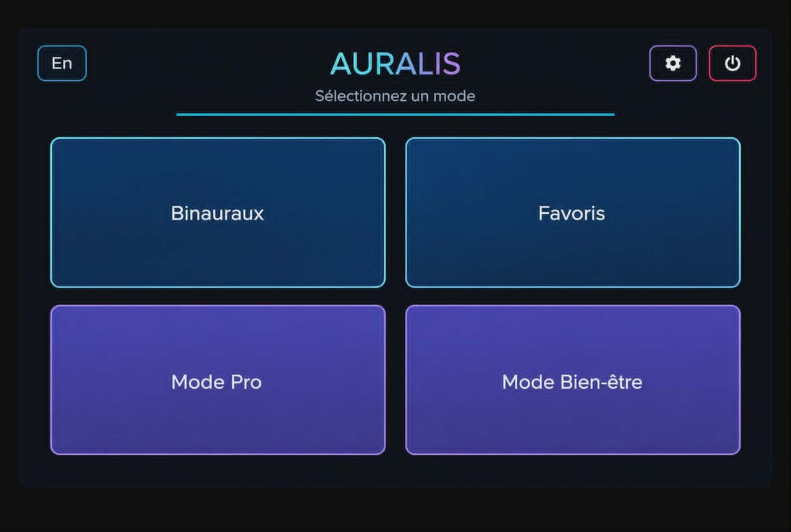
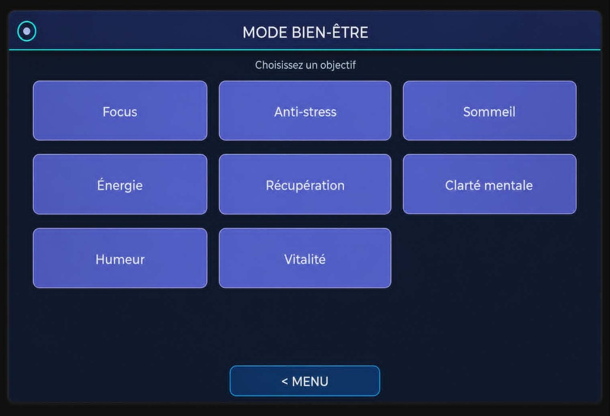
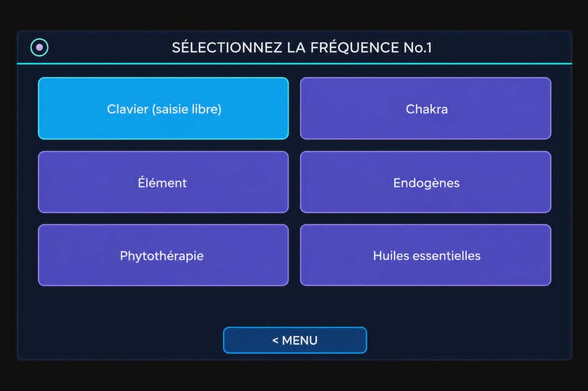
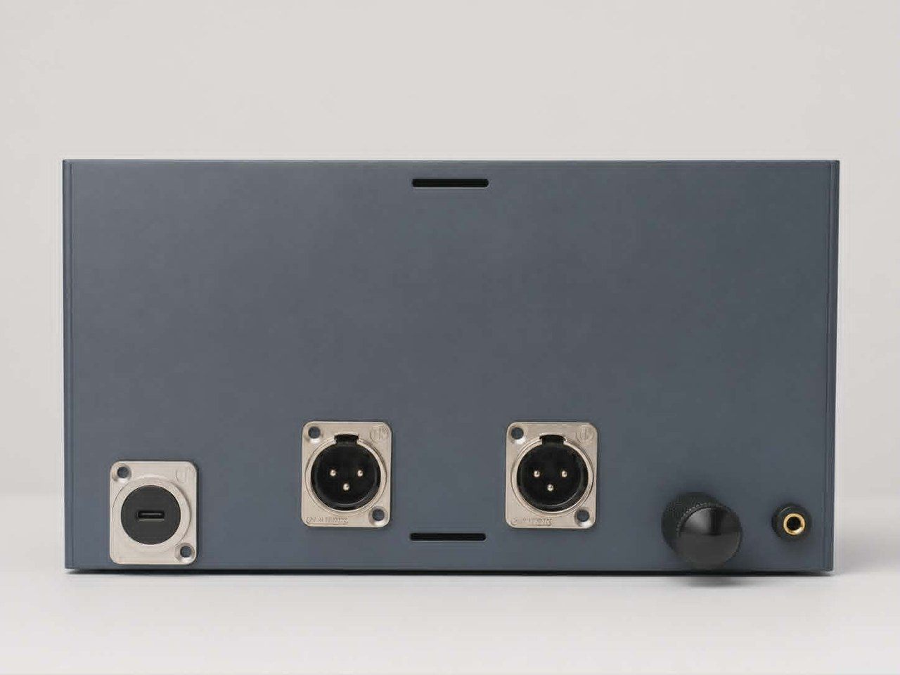

Le son, calculé avec soin
Auralis génère des fréquences pures, dérivées de la nature et calculées avec rigueur. Un outil d'exploration sonore pour la détente et la concentration — en toute transparence, sans promesse.

Auralis est un générateur de fréquences sonores autonome. Il produit des sinusoïdes pures, calculées avec précision, que l'on écoute sur des enceintes ou au casque — seules, en séquence minutée, ou combinées pour créer des battements binauraux.
Chaque fréquence est dérivée d'une molécule, d'un élément ou d'un repère naturel, puis transposée par octaves dans une plage douce et audible. C'est une démarche d'exploration et de conception sonore, que nous expliquons en toute transparence.
L'appareil se veut simple et honnête : écran tactile, interface épurée, aucune connexion requise. C'est un objet de bien-être et de relaxation — pas un dispositif médical, et les fréquences n'ont pas d'effet thérapeutique démontré.

Quatre façons d'utiliser Auralis.
Deux fréquences légèrement décalées, une dans chaque oreille, pour créer un battement.
Enregistre tes séquences préférées et relance-les en un seul geste.
Compose ta propre séquence de fréquences minutées (molécules, chakras, éléments).
Des protocoles guidés prêts à l'emploi : Focus, Sommeil, Énergie, Anti-stress…
Deux configurations disponibles.

972 $ — Boîtier avec 2 sorties XLR
1080 $ — Boîtier avec 2 sorties XLR et une sortie jack (écouteur)
Ouvre un courriel pré-rempli vers auralis432@gmail.com
Une bibliothèque de fréquences dérivées de molécules de phytothérapie, d'huiles essentielles et de molécules naturellement présentes dans le corps. En voici quelques-unes.
| Curcumine (curcuma) | 137.2653 |
| Withaférine A (ashwagandha) | 87.6772 |
| Salidroside (rhodiola) | 111.8974 |
| Linalol (lavande) | 114.9529 |
| Menthol (menthe) | 116.4583 |
| Thymol (thym) | 111.9496 |
| Mélatonine | 173.1023 |
| Sérotonine | 131.3220 |
| Coenzyme Q10 | 160.8483 |
En toute transparence, voici la démarche derrière chaque fréquence.
Chaque fréquence est dérivée d'une molécule par une formule simple et constante. On part de sa masse molaire (sa masse en g/mol), qu'on multiplie par un facteur fixe, puis on ramène le résultat par octaves (en divisant ou multipliant par 2) dans une plage douce et audible, autour de 70 à 200 Hz.
Une conséquence intuitive : plus une molécule est légère, plus sa note est grave ; plus elle est lourde, plus sa note est aiguë. Comme le tableau périodique classe justement les éléments par masse croissante, le parcourir revient à monter la gamme — des éléments légers (hélium, lithium) vers les plus lourds (or, platine).
Cette approche — traduire la masse molaire d'une molécule en fréquence sonore — s'inscrit dans la lignée des travaux du physicien français Joël Sternheimer, utilisés en France depuis plus de 30 ans. Il a formulé la théorie des « protéodies », les mélodies des protéines, en associant à chaque acide aminé une note calculée à partir de sa masse, via l'équation d'Einstein/Planck (h·f = m·c²) transposée de plusieurs octaves. C'est une théorie exploratoire, présentée ici comme source d'inspiration de notre démarche, sans prétention thérapeutique.

C'est une transposition : on traduit l'identité numérique d'une molécule en une note. Cette correspondance est une démarche de conception et d'exploration sonore — elle n'a pas d'effet thérapeutique démontré.
Auralis est un projet artisanal, mais sérieux — pensé et assemblé à la main, avec le cœur. Il est né d'une envie simple : rendre les générateurs de fréquences vraiment faciles à utiliser, là où ils sont souvent techniques et austères.
Autour de cette idée, Auralis propose des modes personnalisés et une large bibliothèque de fréquences reliées à la nature — plantes, molécules endogènes, hormones et éléments du tableau périodique. Chaque fréquence est calculée selon une méthode constante et transparente, pour explorer le son en toute simplicité.
L'appareil et son interface.




Ce que les utilisateurs racontent.
« J'ai écouté les fréquences du chakra du cœur et j'ai ressenti des vibrations au niveau du cœur, ainsi qu'une libération, un relâchement et de l'acceptation. Pour le chakra du plexus solaire, j'ai ressenti une libération d'émotions et j'ai revécu des moments de mon enfance qui ont été traumatisants ; mais de la façon dont je les ai revus, je me suis sentie libérée. »
— Laura
« J'ai écouté la fréquence du GABA pendant 8 minutes et je me suis senti vraiment apaisé et beaucoup plus calme. »
— Anthony
Témoignages personnels reflétant un ressenti subjectif. Les expériences varient d'une personne à l'autre et ne constituent pas une promesse de résultat ni un avis médical.
Un générateur de fréquences sonores autonome, avec écran tactile, pensé pour la relaxation et l'exploration sonore.
Via des enceintes amplifiées, un casque d'écoute, des transducteurs ou un speaker aquatique. Le casque reste indispensable pour le mode binaural.
Non. Auralis est un appareil de bien-être et de relaxation. Il ne pose aucun diagnostic, ne soigne aucune maladie, et ne remplace pas un avis médical.
Sur notre communauté Discord : pose tes questions, partage tes retours et échange avec d'autres utilisateurs.
Échange avec d'autres utilisateurs, partage tes protocoles et tes retours.
Rejoindre le DiscordOu écris-nous : auralis432@gmail.com